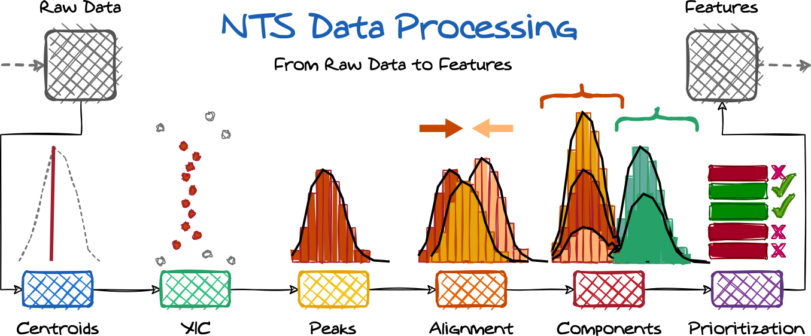
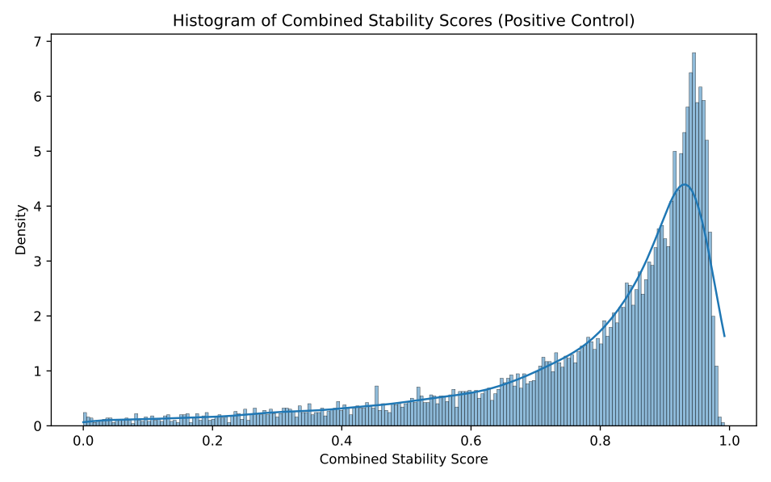
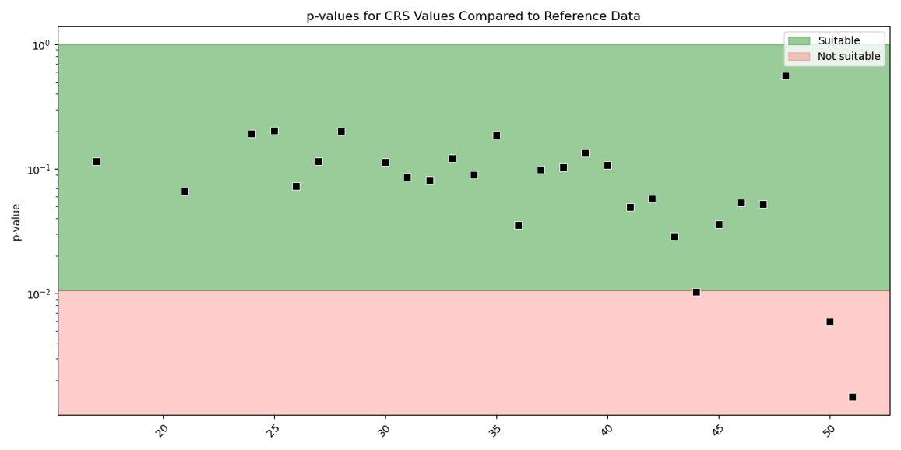
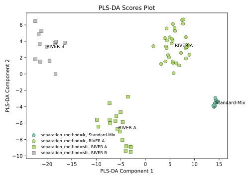
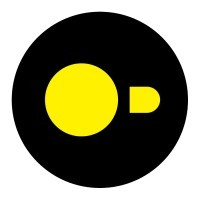
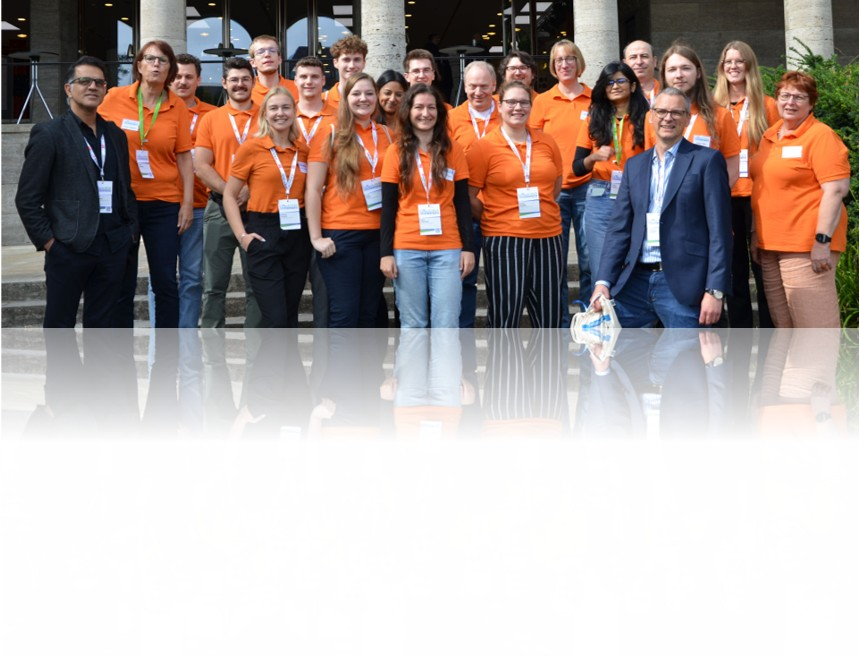

Advancing data science
Near future - input talks Toolbox for implementation:
Existing AI & data science frameworks
Gerrit Renner,
University of Duisburg-Essen, Instrumental Analytical Chemistry, TC Schmidt Lab,
gerrit.renner@uni-due.de

Non-Target Screening in 2022 (Graphic by Gerrit Renner)
-
NTS processing is a multi-step workflow
-
For each step, various algorithms available
-
Most steps require user-defined settings/parameters
-
I/o not yet standardized
Non-Target Screening in 2022 (Graphic by Gerrit Renner)
Peak detection: still challenging
-
Can we detect peaks?
-
How reliable are peak detections?
-
How similar are peaks? (Component grouping)
-
Similar challenges for all steps within NTS!
Examplary generic data
Algorithm comparison: Limited overlap
-
Different sets: Algorithms detect different peaks/features entirely
-
Different values: Same features, but different boundaries, intensities, areas
-
Consequence: Results are often not comparable across studies
-
Need: Uncertainty information for all reported results
References:
a) Renner & Reuschenbach (2023). Anal. Bioanal. Chem., 415(18), 4111-4123.
b) Hohrenk et al. (2019). Anal. Chem., 92(2), 1898-1907.
c) Myers et al. (2017). Anal. Chem., 89(17), 8696-8703.
Odea-Project: QAlgorithms
NTS Processing Step
Generic q-algorithm step design
Odea-Project: QAlgorithms
NTS Processing Workflow
visit QAlgorithms on GitHub
Q-algorithm workflow overview
References:
a) Reuschenbach et al. (2022). Anal. Bioanal. Chem., 414(22), 6635-6645.
b) Reuschenbach et al. (2023). Anal. Chem., 95(37), 13804-13812.
c) Reuschenbach et al. (2024). Anal. Chem., 96(18), 7120-7129.
qAlgorithms in essence
Asymmetric Peak Model
exp(β₀ + β₁x + β₂x² for x<0, β₃x² for x≥0)
Mass Trace Splitting Criterion
Critical distance: A + (B / √log(n+1)) · σ
QAlgorithms Results
{
"peak_id": "peak_001",
"retention_time": 5.23,
"m/z": 256.1234,
"intensity": 150000,
"area": 125482,
}
QAlgorithms Results
{
"peak_id": "peak_001",
"retention_time": 5.23,
"m/z": 256.1234,
"intensity": 150000,
"area": 125482,
"uncertainty":
{
"retention_time": 0.048,
"m/z": 0.00021,
"intensity": 4582,
"area": 3251
},
}
QAlgorithms Results
{
"peak_id": "peak_001",
"retention_time": 5.23,
"m/z": 256.1234,
"intensity": 150000,
"area": 125482,
"uncertainty":
{
"retention_time": 0.048,
"m/z": 0.00021,
"intensity": 4582,
"area": 3251
},
"quality_metrics":
{
"data_quality_score_peak": 0.92,
"data_quality_score_bin": 0.98,
"data_quality_score_centroid": 0.91
}
}
What is the benefit of so much information?
Processing Consistency Metric
NTS data processing workflow can be seen as a series of filtering steps for centroids.
a)
Do not appear in EICs
b)
Appear in EICs but not considered for features
c)
Appear in EICs, considered for features, but not found in replicates
d)
Appear in EICs, considered for features, and found in replicates
Processing Consistency Metric
NTS data processing workflow can be seen as a series of filtering steps for centroids.
a)
Do not appear in EICs
b)
Appear in EICs but not considered for features
c)
Appear in EICs, considered for features, but not found in replicates
d)
Appear in EICs, considered for features, and found in replicates
Cliff's delta
0.23 +/- 0.02
property, e.g., m/z
Processing Consistency Metric
NTS data processing workflow can be seen as a series of filtering steps for centroids.
All pairwise groups along all properties form a data cube of Cliff's delta values.
Processing Consistency Metric
NTS data processing workflow can be seen as a series of filtering steps for centroids.
If data and workflow are consistent, replicate cubes should be similar.
Processing Consistency Metric

-
Reference Consistency: via Monte-Carlo Experiment
-
Good Consistency: Sample should be located within this reference distribution
Processing Consistency Metric

-
River Samples using RPLC, SFC, with/without polarity switching
Negative control: same sample, different MS settings
Using Cliff's delta cubes for digital fingerprinting

qAlgorithms NTS Data Processing & the consistency measure tool are available as open source
qAlgorithms NTS Data Processing & the consistency measure tool are available as open source
but hard to use for progammers & non-programmers.
qAlgorithms NTS Data Processing & the consistency measure tool are available as open source
but hard to use for progammers & non-programmers.
Why? there are no established standards for i/o
PINTS (Pipelines for Non-Target Screening)
A community founded to standardize i/o for non-target screening data evaluation tools
PINTS (Pipelines for Non-Target Screening)
A community founded to standardize i/o for non-target screening data evaluation tools
Approach based on: duckDB

https://duckdb.org
-
open database
-
no server
-
optimized for analytical data
-
easy to implement
-
multi programming language support
PINTS (Pipelines for Non-Target Screening)
A community founded to standardize i/o for non-target screening data evaluation tools
- smp id
- run id
- method info
- smp id
- run id
- feat id
- mz
- rt
- area
- e.g., smp id
- e.g., run id
- e.g., feat id
- e.g., peak width
- e.g., annotation
A standardized schema for non-target screening data
PINTS (Pipelines for Non-Target Screening)
A community founded to standardize i/o for non-target screening data evaluation tools
-
PINTS
-
PINTS-core
-
PINTS-plugins
-
PINTS-api
- PINTS-py
- PINTS-cpp
- PINTS-r
PINTS-py.reader
some NTS tool in python
PINTS-py.writer
PINTS-cpp.reader
some NTS tool in c++
PINTS-cpp.writer
Outlook: Extend your perspective
NTS Data Processing Pipeline
Data Acquisition
MS raw data
Peak Detection
& Integration
Feature Alignment
& Annotation
Statistical Analysis
& Reporting
The workflow we've been discussing...
NTS is Just One of Many
Every analytical method has its own data processing pipeline
NTS / Mass Spectrometry
Peak detection, alignment, annotation, identification
NMR Spectroscopy
Phase correction, baseline, peak picking, assignment
IR / Raman
Baseline correction, normalization, band assignment
Chromatography
Peak integration, retention time alignment, quantification
Elemental Analysis
Calibration, matrix correction, quantification
And Many More...
UV-Vis, Fluorescence, XRF, XRD, ...
Each with different tools, formats, and workflows!
CogniFlow Project: Our Vision
Ontology
Processing Steps
Atomic units with
standardized I/O
Composable Pipelines
Chain steps into
complete workflows
Full Traceability
Every step documented
& reproducible
A comprehensive ontology defining all concepts for analytical data processing,
enabling interoperability, reproducibility, and FAIR compliance.
The Processing Step
The atomic building block of every data pipeline
Parameters
Processing Logic
Output Data
Standardized format
Full Documentation
Every step, parameter, and data type MUST BE formally described
Building Pipelines
Compose custom workflows from standardized building blocks
Step Library
Data Import
Baseline Correction
Peak Detection
Alignment
Annotation
Export
Your Pipeline
Import
Baseline
Peak Det.
Annotate
Export
As every step is defined in the Ontology
Complete Audit Trails
All transformations tracked with full provenance
Full Reproducibility
Pipelines can be exactly recreated anywhere
FAIR Principles
Findable, Accessible, Interoperable, Reusable
Every step documented • Parameters tracked • Fully reproducible
Summary
qAlgorithms
Parameter-free, consistent NTS data processing
Consistency & Digital Fingerprinting
NTS enables consistency measurement & quality assurance
PINTS
Standardized I/O for interoperable NTS tools
CogniFlow
Ontology-based standardization for all analytical methods
Thank you for your attention!

Gerrit Renner,
University of Duisburg-Essen, Instrumental Analytical Chemistry, TC Schmidt Lab,
gerrit.renner@uni-due.de